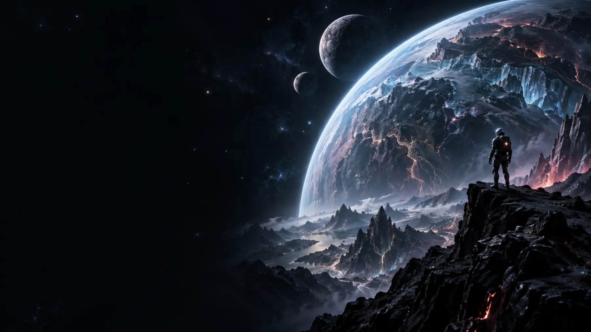

O
01 · ELEMENTAL PUZZLE● PORTAL ACTIVO
Order of Lords
Cuatro elementos. Una torre. El destino de los Lords en tus manos.
JUGAR ↗PILUKARTS ORIGINAL UNIVERSE
Personajes, juegos y arte nacidos de un mismo universo creativo. Elige un portal y entra.

ASTRO / COSMIC BLOCKSExplorar la misión ↗ DESCUBRIR ↓Código · Diseño · Ideas
Soy ilustradora y full stack developer. Diseño personajes, interfaces y sistemas que convierten ideas en experiencias completas.
01 / UNIVERSO PILUKARTS
Cada planeta guarda una historia, un personaje y una forma distinta de jugar.
Cuatro elementos. Una torre. El destino de los Lords en tus manos.
JUGAR ↗Comandantes y alianzas luchan por controlar la forja estelar.
PRÓXIMAMENTEUna heroína, poderes inesperados y un universo lleno de personalidad.
PRÓXIMAMENTEDioses, secretos y tesoros protegidos por un templo antiguo.
PRÓXIMAMENTEEntra en la arena, domina el combate y conquista tu leyenda.
JUGAR ↗Treinta misiones a través de tres galaxias junto a Astro.
JUGAR ↗02 / TRANSMISIONES
Pequeñas noticias de software generadas a partir de la actividad real de mis proyectos.
03 / PROTOCOLO ASTRO
Astro nació en un juego de Telegram y evolucionará hacia una colección NFT y nuevas experiencias Web3. Esta área documenta el proceso con transparencia.
El progreso y la meta económica se publicarán cuando estén definidos. Todos los apoyos se gestionan exclusivamente desde Ko-fi.
03 / RECOMPENSAS CÓSMICAS
Recompensas digitales, cosméticos de Astro y premios de temporada. La primera misión se anunciará aquí.
04 / ARCHIVO DIGITAL
Obras y personajes digitales del universo Pilukarts. Los enlaces de contrato se publicarán solo después de verificarlos.
05 / REPOSITORIO
Perfil profesional de Pilukarts en GitHub. Los juegos y experiencias públicas se descubren desde sus planetas.
CAPACIDADES / POR CATEGORÍA
Los proyectos individuales permanecen en GitHub. Aquí se muestra únicamente la arquitectura general de mi trabajo.